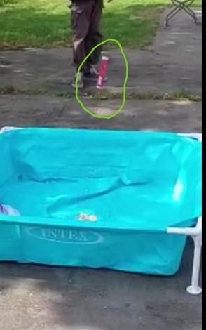
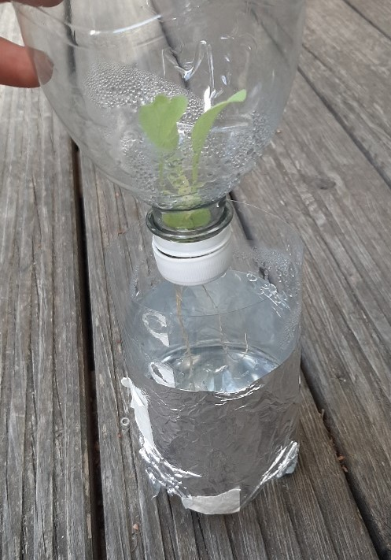

Im Zuge meines Praktikums habe ich in praktischer Arbeit viele Experimente absolviert, und da diese ein essenzieller Bestandteil des Labors sind, möchte ich an dieser Stelle einige vorstellen.
Im Zuge des Themas „Ernährung im Weltall/auf dem Mond“ wird im DLR_School_Lab auch ein Experiment durchgeführt, und zwar der Bau eines funktionierenden Modells einer Hydroponik-Anlage. Bei dem im Modell umgesetzten Prinzip handelt es sich um das sogenannte „Deepwater“-Prinzip, das heißt die im Modell anzubauenden Pflanzen wachsen auf Watte und stehen im Wasser, woher sie auch ihre Nährstoffe beziehen. Die für das Experiment benötigten Materialien sind eine PET-Wasserflasche sowie ein wenig Watte und Aluminiumfolie. Diese Weise des Nahrungsanbaus ist im Bereich der Raumfahrt sehr Vielversprechend, da weder Erde noch Sonnenlicht zwingend benötigt wird. Außerdem können solche Anlagen auch autonom gesteuert werden, um Arbeitsaufwand zu minimieren
Brauserakete (in grün eingekreist)
Um auch kleineren Schülern das Antriebsprinzip von Raketen (das Rückstoßprinzip) zu vermitteln, habe ich zur veraunschaulichung mit den Schülern „Brause-Raketen“ gebaut. Das sind im Grunde nur die Schachteln von Brausetabletten, in die man eine zerbröselte Brausetablette sowie ein wenig wasser hineinfüllt. Durch den steigenden druck kommt es zu einer kleinen Explosion, was die Plastikröhre in die Höhe schießen lässt. Daran können auch kleine Kinder die Grundlagen der Funktionsweise von Raketen verstehen.
Hydroponik-Selbstversuch (Pflanze ist eine Endivie)
Hier eine kleine Kostprobe des Vogelgezwitschers, das dieser Endivie dank moderner Technologie nun entgeht: